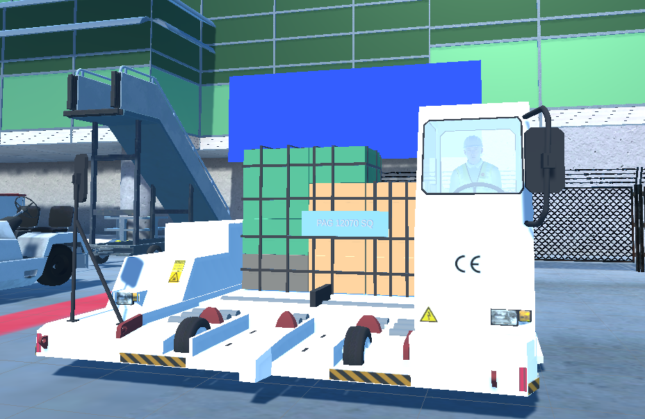
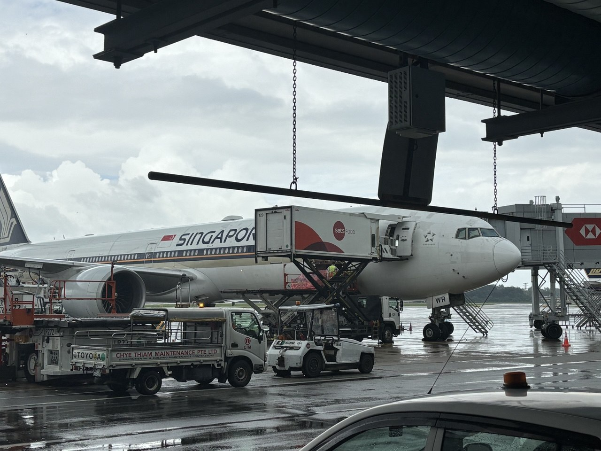
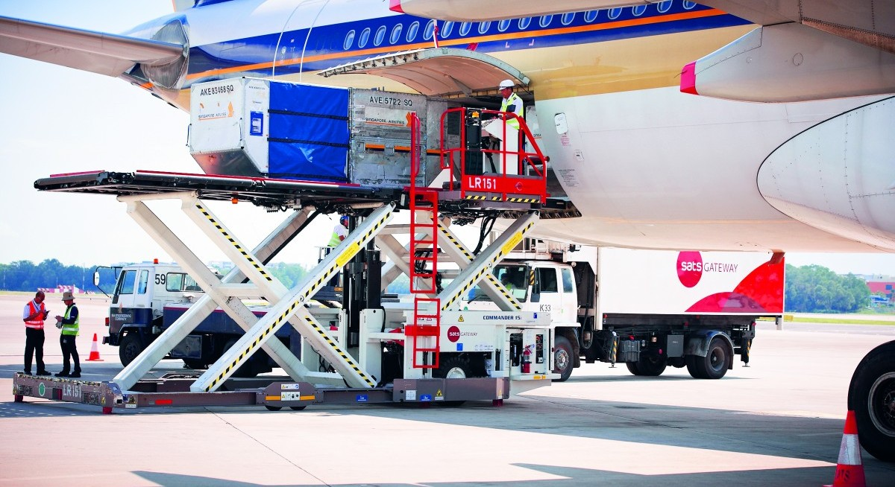
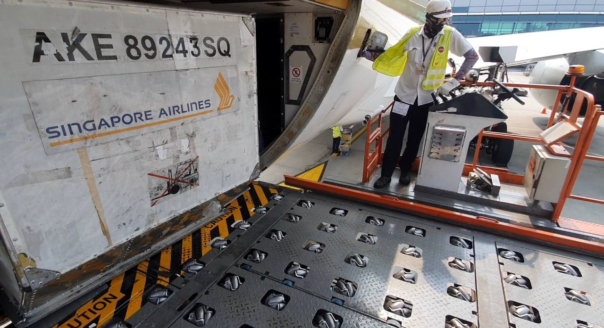
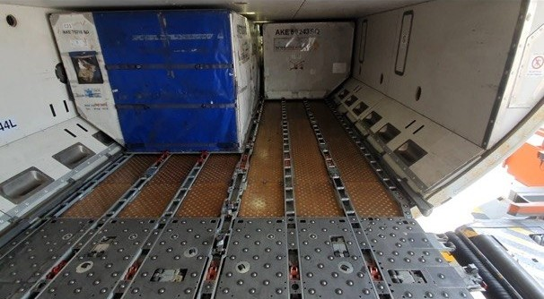
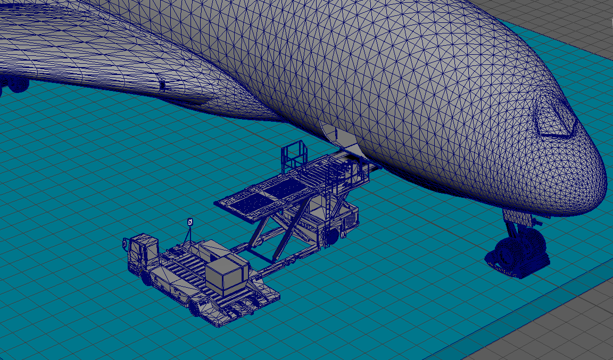
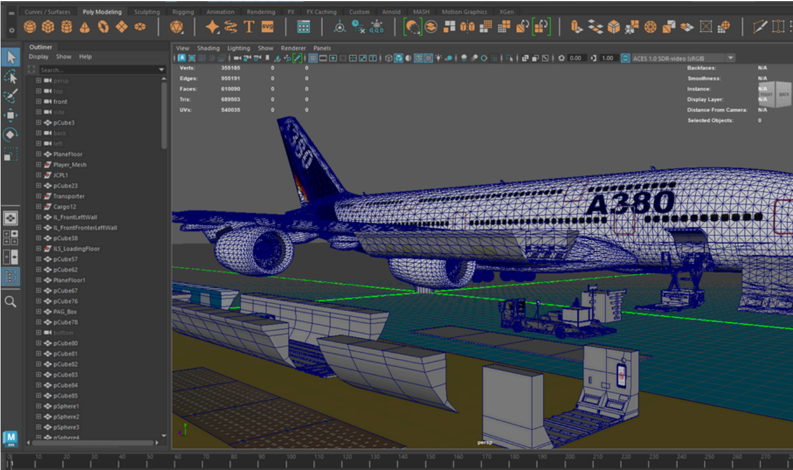
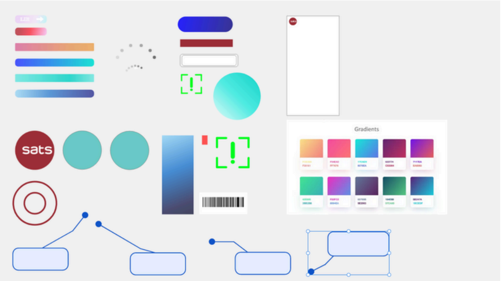
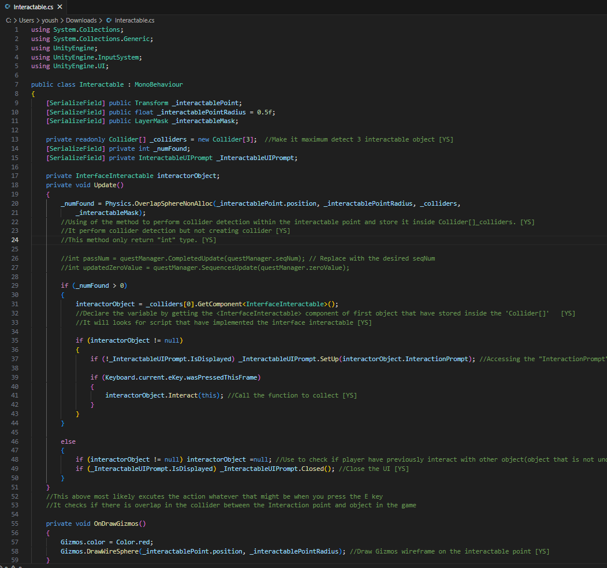
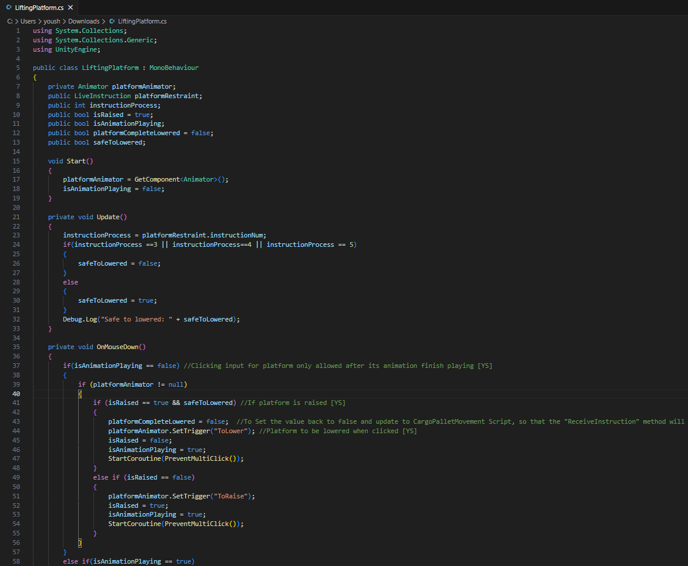

SATS Cargo Loading Simulation


Elevating aviation training through interactive tech.
A custom-built simulator powering the next generation of cargo ramp professionals. Featuring accurate 3D assets, dynamic interactions, and seamless enterprise software integration.
01 Overview
Aviation ground handling demands absolute precision. To accelerate and elevate the training experience for new apron staff at SATS, I engineered a high-fidelity, interactive 3D simulation that transforms complex standard operating procedures into an immersive digital experience.
Built from the ground up in Unity Engine, the platform seamlessly merges physical mechanics with enterprise software. Trainees navigate custom-crafted 3D cargo holds, actively maneuvering JCPL transporters, arranging cargo, and securing pallet locks. Simultaneously, they operate a fully functional digital twin of the SATS G-OPS software to scan cargo, cross-reference tracking data, and validate loading reports in real-time.
From crafting the initial 3D meshes in Autodesk Maya to architecting the C# interaction logic and revamping the UI/UX, this project was conceptualized, designed, and built end-to-end solo. It bridges the gap between classroom theory and tarmac execution, delivering a risk-free, highly accurate environment for operational mastery.
02 Client Profile
SATS (Singapore Airport Terminal Services) is a global frontrunner in gateway services and Asia's premier provider of food solutions. Overseeing approximately 80% of ground handling and catering operations at Changi Airport, SATS serves as the operational backbone for one of the world's busiest aviation hubs and maintains an integral strategic partnership with Singapore Airlines.
Established in 1947, the organization has continually evolved by merging advanced technology with a deeply rooted culture of innovation. Today, SATS stands as the preferred partner for airlines, airports, and institutions across the region, consistently leveraging digitalization and data analytics to elevate industry standards and drive the future of aviation operations.

03 The Challenges
The Problem: High-Stakes Operations, High-Friction Training
Aviation cargo loading at Changi Airport demands absolute precision, as a single miscalculation can disrupt flights. For SATS Apron staff, mastering cargo holds and strict SOPs requires intense, hands-on practice. Traditional training methods often lack the interactive repetition needed to build critical muscle memory before stepping onto a high-pressure tarmac.
The Objective: A Risk-Free Engine for Operational Mastery
The goal was to engineer an interactive 3D simulation to expedite training for new apron staff. This high-fidelity digital twin of actual operations allows trainees to practice maneuvering transporters, securing cargo, and using enterprise software in a fully risk-free environment.

img: sats.com04 My Role & Toolkit
Scope & Project Management
Operating as the sole Product Designer and Engineer, I owned the product lifecycle end-to-end. Beyond hands-on development, I managed the strategic roadmap—defining the scope, navigating technical constraints, and ensuring the final product aligned seamlessly with stakeholder expectations and training objectives.
Discovery & Field Research
Translating a high-stakes physical operation into a digital space requires absolute context. I was granted on-site access to Changi Airport's airside, collaborating directly with an industry supervisor to dissect complex ground handling workflows. This firsthand observation allowed me to accurately map the physical constraints of the tarmac and translate them into intuitive digital mechanics.
The Tech Stack
- Simulation Architecture.
- Unity Engine (C#) — interactive logic, object physics, and the real-time runtime.
- 3D Environment Modeling.
- Autodesk Maya — true-to-scale digital twins of cargo holds and equipment.
- Visual & UI/UX Design.
- Adobe Creative Suite — realistic asset textures and a high-fidelity interface.


05 Research & Context
On-Site Discovery & Workflow Mapping
To engineer a simulation that felt authentic to seasoned aviation professionals, I conducted comprehensive field research directly at the Changi Airport airside. Accompanied by an industry supervisor, I observed active cargo loading operations to map the intricate workflows required to maneuver and secure heavy unit load devices (ULDs) within the restrictive confines of an aircraft's cargo hold.
Capturing the Physical Reality
I documented the precise mechanics of the operation, capturing detailed reference photography of critical components:
- The Spatial Constraints.
- Observing how apron ramp staff navigate the tight geometry of the cargo hold while managing large containers side-by-side.
- The Mechanical Interfaces.
- Studying the exact operation of the floor-mounted pallet locks (the latches that secure the cargo) and the roller tracks that guide the pallets into position.


06 3D Modeling & Design
From Reference to 3D Assets
Using the photos and videos captured during my on-site research, I modeled the simulation environment and operational assets from scratch using Autodesk Maya.
Scaling for Functionality
To get the sizing right, I imported a player character into Maya to use as a baseline reference. This ensured the cargo pallets, transporters, and pallet locks were scaled accurately enough for the interaction and locking mechanics to work smoothly in the game engine.
Texturing & Scene Building
Once the modeling was complete, I used Adobe 3D Substance Painter to apply custom materials and textures. To make the scene feel like a genuine Changi Airport environment, I also modeled and placed background elements like the Control Tower and the Jewel building.


07 UI/UX Design
The interface was designed to support the training. By prioritizing clear instructions and familiar controls, the user experience reduces cognitive load so trainees can focus entirely on mastering cargo operations.
Intuitive Interaction
To minimize the learning curve, character movement and camera rotation were mapped to the standard WASD and mouse control scheme.
Guided Task Flow
A dynamic UI system displays current task requirements and specific key inputs. Mission objectives update in real-time, ensuring trainees always know their next step.
Visual System
The interface features a defined color scheme with high readability. Critical instructions and UI buttons stand out clearly without visually clashing with the 3D environment.

08 Interactive Development & Engineering

Modular Architecture via Object-Oriented Programming (OOP)
To ensure the simulation was scalable and performant, I architected a modular interaction system using C# Interfaces (InterfaceInteractable). Instead of attaching heavy, isolated scripts to every object, I utilized optimized physics casting (Physics.OverlapSphereNonAlloc) to detect player proximity. This allowed the player to seamlessly interact with various objects—from cargo pallets to aircraft damage reports—using a unified, lightweight logic structure that drastically reduced performance overhead.
Precision Spatial Tracking & State Management
Aviation SOPs require exact cargo placement. To enforce this, I engineered the ForwardHoldSystem as a robust state machine. When a trainee moves a pallet, the system continuously tracks its real-time X and Z coordinates against predefined multidimensional arrays. If a trainee attempts to lock a pallet outside the designated safe zone, the system intercepts the input, halts progression, and dynamically triggers an error UI prompt, ensuring strict compliance with real-world loading instructions.
Mechanical Synchronization & Quaternions
The simulation required physical mechanics to feel heavy and deliberate. Using OnClickHandler and CargoPalletMovement, I synchronized complex 3D animations with gameplay logic. Pallet locks were programmed using specific Quaternion rotations to physically snap into "lowered," "tactile," or "raised" states upon mouse clicks. Additionally, transporter platforms were coded to lock player input until specific animation frames (GetCurrentAnimatorStateInfo) completed, preventing game-breaking physics glitches.
Engineering the G-OPS Digital Twin
Replicating the SATS enterprise software required building a fully functional in-game camera system (PhotoCapture.cs). I utilized Unity's RenderTexture API to capture the player's real-time field of view, converting it into a Texture2D to simulate a smartphone barcode scan. I then engineered a backend validation loop that cross-references the scanned target against the active Loading Instruction Report (LIR) database—approving the operation if it matches, or prompting a rescan if the data is incorrect.


07 Adaptive AI Engine
After every module, the system dynamically routes learners into one of three tailored paths based on performance: Advanced (≥ 85%), Standard (70%–84%), or Foundational (< 70%), keeping certification standards consistent.
- Real-Time Recalibration.
- Instantly updates pacing after each completed module.
- Mastery Tracking.
- Maps progress across four functional states: Mastered, In Progress, Available, and Locked.
- Smart Recommendations.
- Automatically surfaces the next high-priority skill and targeted review queue.
08 The Proof Layer
Every bridge task that clears its four-dimension rubric earns a permanent record — AI-graded, timestamped, and posted to a single URL. The learner owns it; employers verify it in a click. Each record carries the work itself — the task, the response, and the score — all on one page.
Get your proof now09 Content Operation
A separate admin portal lets the content team create, edit, and publish courses end-to-end — without a developer in the loop.
- Visual Lesson Editor.
- Draft / publish workflow with full version history per lesson.
- Per-Course AI Tutor.
- Title, scope, language, and custom prompt — all configurable without code.
- Two-Layer Trash.
- Confirm dialog, 7-day soft delete, then auto-purge.
10 Brand & Visual Design
Shipped in 3 months — sole owner across product, design, and engineering.
The design system is a direct response to CompassStu's thesis: translating its outcomes-over-completion promise into a premium, restrained visual identity defined by Inter, one violet accent, and alpha-based neutrals.